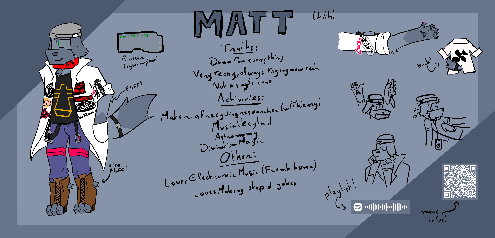
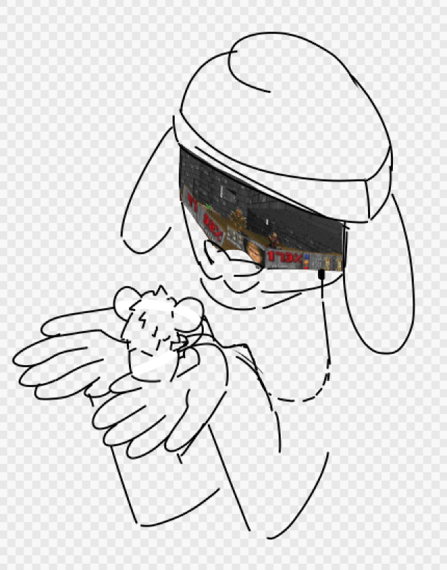

|

Open gallery
MATT
One of our protagonists. It is a senior chemist, researcher in material recycling, and Thierry's coworker.
Fairly laid back, pretty nonchalant, nothing seems to bother it. It's always ready for any shenanigans its flatmates might be planning.
It is very into astronomy, it knows the starry sky like the back of its hands
and the best spots to plant its telescope,away from light pollution.
It's always fascinated by the latest trend in tech. Its visor is a prototype from a cyber implant company;
It can track a fully 3D environment , and it can also superimpose valuable information in its research, such as different notes.
It has also been shown to run Doom (1993) and other misc programs, but it was not exactly official.
Diode kind of bothered Matt enough to try to install homebrew on it, with varying degrees of success.
The visor is extremely modular, thanks to it being a prototype. A few screws hold the LED panel in place, with the full circuit board underneath.

Image courtesy of Kit!
After Thierry's shenanigans with their own grimoire, it tried some magic itself;
Although Thierry's grimoire didn't lead anywhere, a few archived pages of a divination grimoire it found online did lead to some good results!
Whether it's the stars, coffee stains or Tarot cards, Matt can read the future with some amount of precision.
|